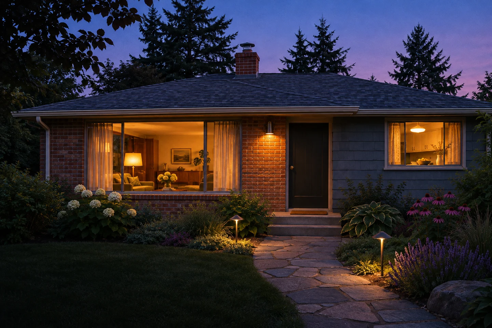
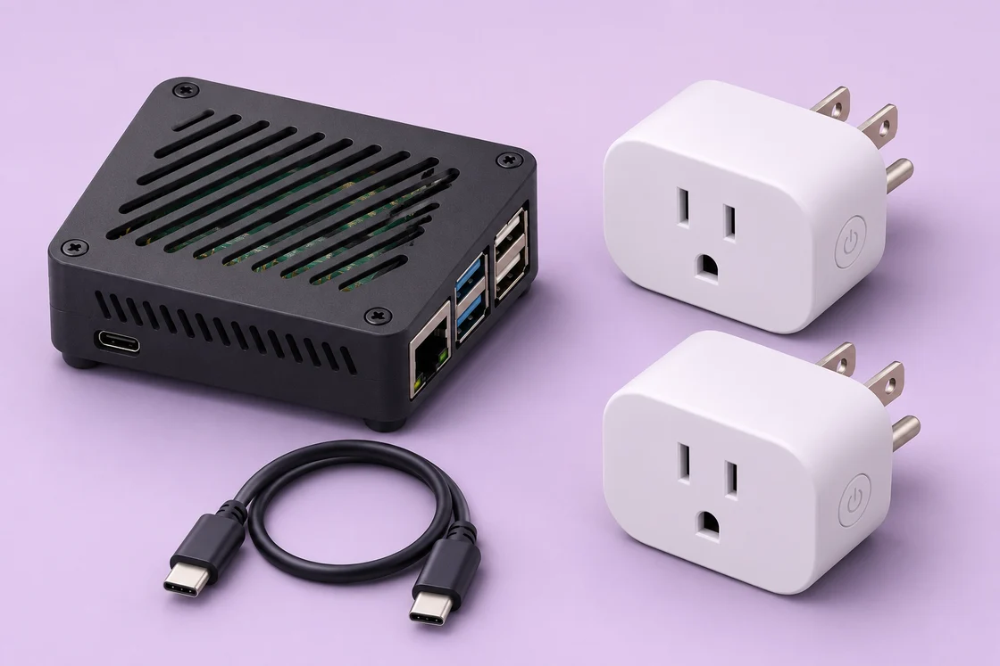

Open source for Raspberry Pi
Make home
look lived in.
Vacation Ghost is a DIY project for a small Raspberry Pi computer. Set your trip dates and it switches two lamps in turn, then saves a morning report on the Pi.
Developer preview. Physical Pi testing pending.

How it works
An evening
that changes.
Set your trip dates before you leave. Near sunset, the lamps start taking turns. The evening winds down at a slightly different time each night.
- A rhythm that varies
- Two lamps take turns. Add TV-style glow or a short sound cue if you want.
- A note in the morning
- The Pi saves when the lamps ran and whether any device had trouble.
- Private by design
- Trip dates stay on the Pi. No camera, microphone, or cloud account.

“Lamps ran between 7:34 PM and 10:45 PM local time (3 hr 11 min total).”
What you need
Start with two lamps.
Start with a small computer, two smart plugs, and lamps you already own.
Full parts list and wiring guideA Raspberry Pi kit
Buy a Pi Zero 2 W or Pi 4 with a power supply, a microSD card, and a case. It runs Raspberry Pi OS.
Two compatible smart plugs
Buy two Shelly Gen2 or Gen3 plugs that the Pi can control over your home network. See the guide for compatibility details.
Two lamps you already own
Reuse lamps that light up when power returns. Leave their switches on so the smart plugs can control them.
Optional glow and sound
Add an LED strip and its power supply for TV glow, or a USB audio adapter and powered speaker for household sounds.

First run
Set it up.
Replay a sample trip.
On Linux, you’ll need Git, Python 3.11 or later, and system time-zone data (usually the tzdata package). These commands download this preview, replay a fictional trip, and print the morning report as JSON.
(
set -eu
demo_dir=$(mktemp -d "${TMPDIR:-/tmp}/vacation-ghost-demo.XXXXXX")
git clone https://github.com/jeffhudesman/vacation-ghost.git \
"$demo_dir/vacation-ghost"
cd "$demo_dir/vacation-ghost"
git checkout --quiet --detach 8f9f9705310c10513dae9832e493f63418516c81
python3 -m vacation_ghost \
--config examples/vacation.example.toml simulate \
--at 2030-06-11T09:00:00Z --state-dir "$demo_dir/state"
cat "$demo_dir/state/daily/2030-06-11.json"
)Compare the message with the example morning note.
Start with two lamps.
- Connect both plugs to a restricted home network and follow the pinned Pi guide to install the lights-only profile.
- Set your dates and plug addresses in the private Pi config. Use the lights-only example as a template.
- Run
doctorto check both plugs andrehearsewhile home. Confirm the running service publishes a fresh status before enabling it at boot.
Use the full commit ID from Developer Preview 1.
8f9f9705310c10513dae9832e493f63418516c81
Open the hardware checklist
(
set -eu
cd /opt/vacation-ghost
sudo -u vacation-ghost -g vacation-ghost \
/opt/vacation-ghost/.venv/bin/python -m vacation_ghost \
--config /etc/vacation-ghost/vacation.toml doctor
)Plug kitchen: off
Plug living: off
TV glow: disabled
Sound: disabledPhysical Pi testing is pending.
Before you leave
Good to know.
Does it need an internet connection?
Installation may need internet access. The routine itself runs locally, and the Pi talks to the plugs over your home network.
Where do I find my morning note?
During a trip, the Pi saves the previous night’s note at 8 AM local time. Open the file for today’s date under /var/lib/vacation-ghost/current/daily/ and look for the message field. The Pi guide shows the command to read it.
What if my plans change?
Use disarm to end a trip early. If shutdown needs to be retried, recover only attempts to switch outputs off. See the service guide.
Is it ready for an unattended trip?
Run the hardware checklist on your setup, including power loss and network loss, before relying on it.